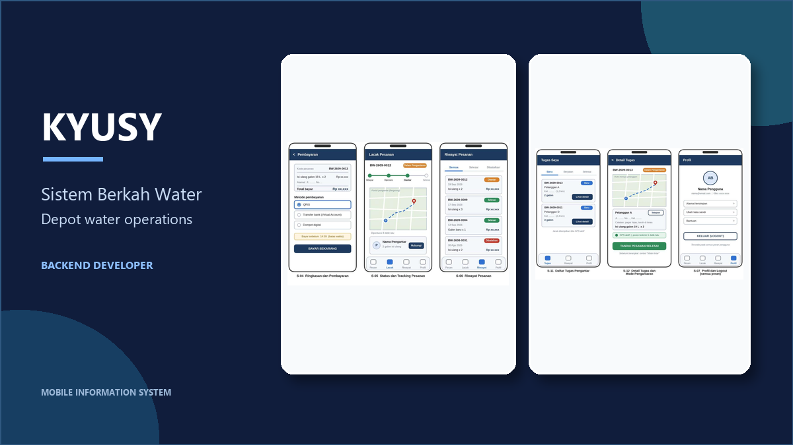
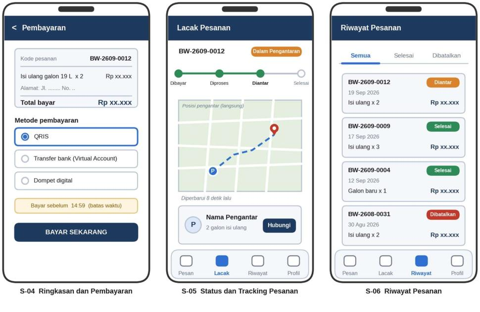
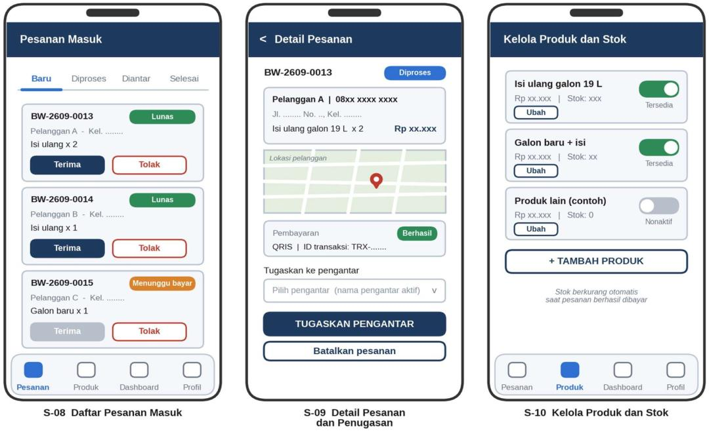
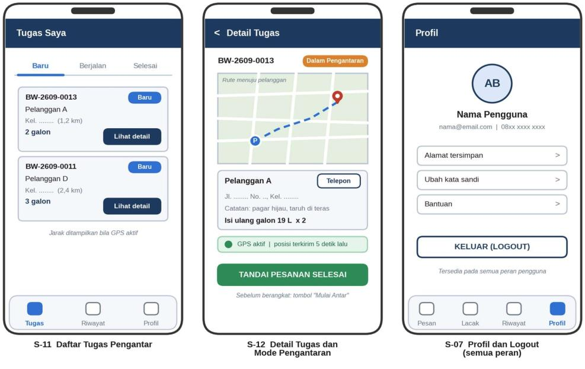
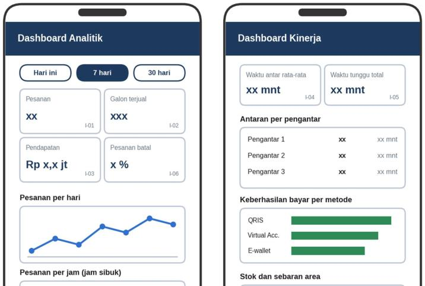
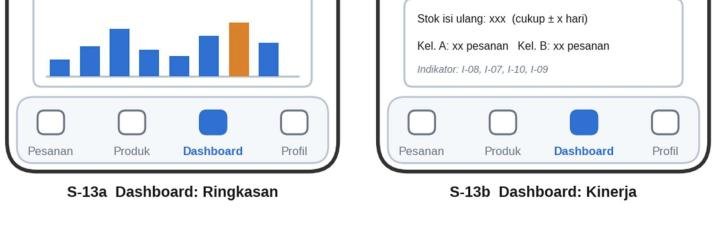

BACKEND
Kyusy — Sistem Berkah Water
Sistem informasi pengelolaan administrasi depot air minum berbasis mobile untuk mendukung pemesanan, pengantaran, pembayaran, dan operasional Berkah Water.
Sistem terintegrasi untuk membantu operasional depot air minum.

PROJECT OVERVIEW
Operasional depot yang lebih terhubung.
Wireframe sisi pelanggan, pemilik depot, dan pengantar.

Pesanan pelanggan
Alur pemesanan dan riwayat transaksi.

Tracking pengantaran
Pelanggan dapat memantau proses pengiriman.

Manajemen depot
Pengelolaan pesanan, pengantar, dan stok.

Dashboard pengantar
Daftar tugas dan pembaruan status.

Dashboard analitik
Ringkasan kinerja dan operasional depot.
THE CHALLENGE
Operasional depot yang masih mengandalkan pencatatan manual membutuhkan sistem terintegrasi untuk mengelola pesanan, pengantaran, pembayaran, stok, dan laporan keuangan.
MY CONTRIBUTION
Berperan sebagai Backend Developer dengan mengembangkan backend, database, REST API, autentikasi, alur pembayaran, dan integrasi aplikasi mobile.